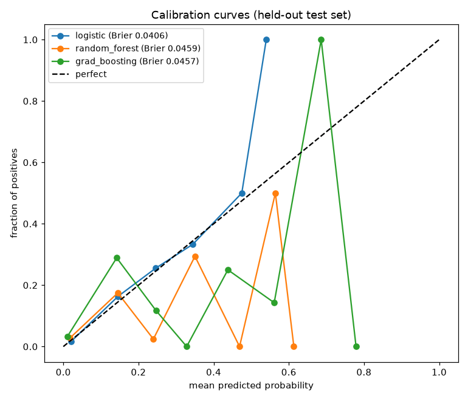
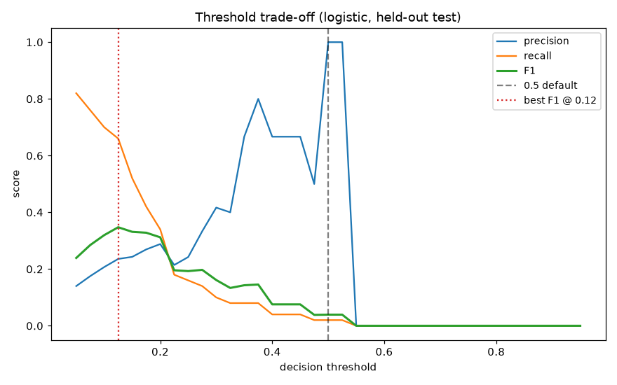
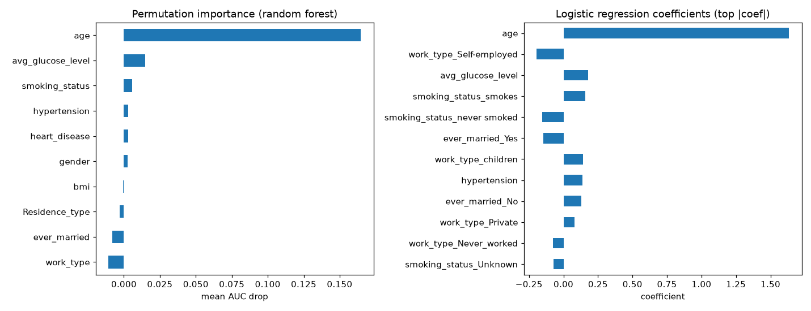

← back to the main walkthrough · repo
The main analysis compares eight models across four preprocessing scenarios on AUC, accuracy, sensitivity, and specificity. This follow-up answers three questions it left open. I ran it in Python with scikit-learn on the same healthcare-dataset-stroke-data.csv (5,110 patients, 249 strokes, 4.9% positive), using a stratified 80/20 train/test split with seed 42. Every number below is measured on the 1,022-patient held-out test set.
AUC rewards ranking; it says nothing about whether a predicted 20% means 20%. For a medical model, calibration matters.
| model | AUC | Brier score (lower is better) |
|---|---|---|
| logistic regression | 0.842 | 0.041 |
| gradient boosting | 0.828 | 0.046 |
| random forest | 0.789 | 0.046 |

The plain logistic regression wins on both discrimination and calibration. The tree ensembles are slightly overconfident in the middle range. On a small imbalanced set like this, the simpler model generalizes better.
The default 0.5 threshold is a silent failure mode here. At 0.5, the best model has precision 1.0 but recall 0.02: it flags almost nobody, so it misses nearly every stroke.

| threshold | precision | recall | F1 |
|---|---|---|---|
| 0.50 (default) | 1.00 | 0.02 | 0.04 |
| 0.125 (best F1) | 0.24 | 0.66 | 0.35 |
| 0.075 (Youden's J) | 0.18 | 0.76 | — |
Lowering the threshold to 0.125 catches two thirds of strokes at a precision of 0.24, about five times the base rate. Whether that trade is worth it depends on the cost of a false alarm versus a missed stroke, which is a clinical call, not a modeling one. The point is that the threshold is a decision, not a default.

Permutation importance (drop in AUC when a feature is shuffled) and the logistic coefficients agree: age dominates everything else, followed by average glucose level, smoking status, hypertension, and heart disease. BMI contributes almost nothing here, partly because 201 of its values are missing and median-imputed.
Script: analysis/ in the repo.